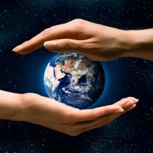

La section « Ecologie (Sciences de la nature) » est une section qui sert à étudier les êtres vivants dans leur milieu et les interactions entre eux.
Objectifs :
Parmi les objectifs de la section « Sciences de la Nature », celui de vulgariser à nos jeunes les concepts de l’écologie et de promulguer dans la société l’éducation environnementale.
Plan d'action :
- Au plan scientifique : être partenaire de centres de ressources (CITET, CST, ANPE, etc.), centres de recherches (Institut Pasteur, INRAT, INAT, INRST, Universités etc.),
- Au plan éducatif : être un lieu de démonstration, de référence, de formation et d’information etc.,
- Au plan culturel : conserver et valoriser le patrimoine national,
- Au plan de la communication : être un lieu d’échanges,
- Au plan technologique : intégrer les Nouvelles technologies de l’Information et de la Communication,
Les adhérents :
Ils sont répartis en 3 niveaux :
- Niveau 1: 7,8,9ème année enseignement de base (13 à 15 ans environ),
- Niveau 2: 1,2,3ème année secondaire (16 à 18 ans environ),
- Niveau 3: 4ème année secondaire et tout le supérieur (19 ans et plus),
Le programme :
En respectant les objectifs et le plan d’action, le programme de la section « Sciences de la Nature » comportera plusieurs modalités selon le niveau des adhérents.
1- Sorties d’étude :
- Visite d’un écosystème et observation des phénomènes géo-écologiques,
- Discussion et analyse des observations,
- Initiation aux méthodes de capture,
- Initiation aux méthodes d’échantillonnage,
- Initiation aux techniques de mesure des composantes environnementales (l’eau, l’air et le sol) du milieu de vie des organismes.
2- Activité de salle :
- Analyse des échantillons de la sortie, conclusion et établissement d’un rapport,
- Établissement des clés de détermination des principaux embranchements du règne animal et végétal,
- Établissement des clés de détermination des roches, des sols de l’humus,
- Réalisation de la carte phyto-écologique de la Tunisie,
- Construction d’instruments de mesure des paramètres écologiques,
- Réalisation de modèles et de maquettes qui illustrent des phénomènes naturels,
- Réalisation de panneau et de fiches techniques qui illustrent l’activité de terrain et de salle,
- Réalisation des pages web avec des animations et du son qui résument l’activité de terrain et de salle
3- Sensibilisation :
- Animations scientifiques, exposition et compagne de sensibilisation sur les problèmes de pollution et la protection de l’environnement au sein des établissements scolaires et des maisons de jeunes,
- Inciter les jeunes et les moins jeunes à contribuer volontairement aux activités de sensibilisation,
4- Formation :
- Formation des animateurs et aides animateurs par la méthode de recouvrement,
- Initiation pour une meilleure participation à la protection de l’environnement, des ressources naturelles et des équilibres écologiques,
- Invitation de spécialistes en matière d’environnement et débat,
- Invitation de spécialistes en matière d’environnement et débat,,
5- Communication :
- Établissement de relations de coopération avec d’autres associations qui partagent les mêmes objectifs pour un échange fructueux du savoir et du savoir-faire, soit par des visites sur les lieux, soit par le Web
- Organisation de journées d’étude en collaboration avec d’autres associations et réalisation de projet en communs,
6- Visites guidées :
- Visites guidées des usines polluantes (papeteries, sucrerie, usines etc.) constater leur impacte sur l’environnement,
- Visites guidées de quelques sites connus et parcs nationaux,
- Visites guidées des centres de ressources (CITET, CST, ANPE, etc.) et des centres de recherches (Institut Pasteur, INRAT, INAT, INRST, Universités etc.) pour acquérir une meilleure éducation environnementale.